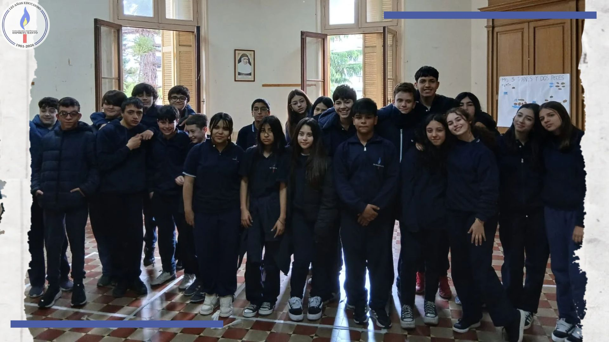
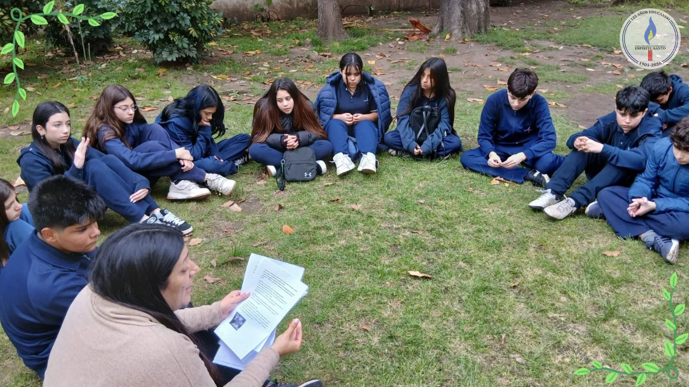
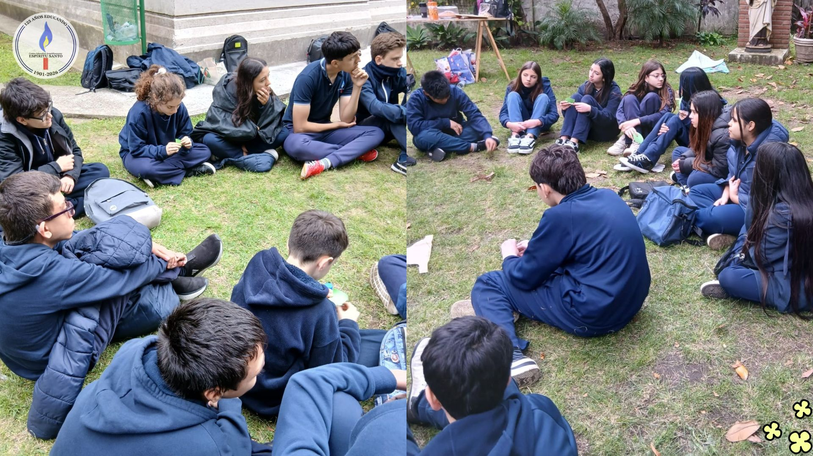

Convivencia de los alumnos de 1º A y B
Por: Vito Bernini y Griselda Orellano

El pasado lunes 19 de octubre, los alumnos de primer año A y B, acompañados docentes, vivieron una jornada muy especial al realizar su primera convivencia en el Santuario Jesús Sacramentado. Durante el encuentro, el clima fue de integración y alegría, marcado por diferentes dinámicas y propuestas recreativas. Por un lado, los varones disfrutaron de un partido de fútbol, mientras que las chicas participaron en un original juego de supervivencia que consistía en ingeniárselas para mantenerse a bordo sin pisar fuera de la zona delimitada como "el barco". La salida fue sumamente recreativa para todos, la cual se extendió y concluyó a las 12:50 horas.

